SPACE 06
06 女主衣帽间
现状、需求与预期效果，放在一起讨论。
06 女主衣帽间装修需求
所有尺寸均为参考；施工、定制、开孔和下单以现场实测、实物安装要求及确认图纸为准。列入配置不等于已经购买。
现场实拍
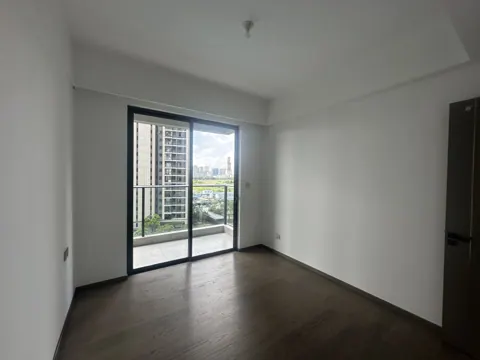
望向阳台方向（南）
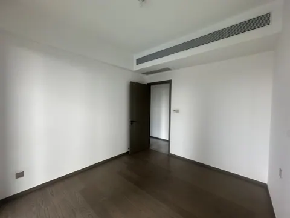
望向门口方向（北）
DESIGN INTENT
预期效果
仅展示需求文档中列出的效果图。
AI 照片级效果以 3ds Max 的空间与家具布局为依据，灯光、织物与小摆件用于氛围示意；实物配置以本页需求及设备清单为准。


功能与布局
- 风格定位：奶油白风格，地面及梳妆组合柜以奶油白为主，结合镜面柜门与柔和照明。
- 梳妆与护肤：西墙从西南柱旁至不挡门的位置设置奶油色梳妆台与两侧玻璃展示柜一体组合，台面由展示柜支撑，椭圆 LED 镜；台面下设置三只浅抽屉，一侧预留约 400 mm 高的 mini 护肤品冷藏设备，中间保留坐姿腿部空间。
- 衣物收纳：北墙、东墙连续 L 型衣柜，按长衣悬挂、短衣悬挂、叠放及换季储物等用途划分功能区，不要求全柜三层等高。各区比例及挂衣净高按业主衣物长度、数量和取用习惯确认，避免均分层高导致衣物无法悬挂；接受组合式衣柜，模块布局与转角取用一并深化。衣柜连续覆盖东南角；衣物收纳部分的外侧柜门贴镜；北墙靠门端为奶油白展示边柜，上部封闭柜、中部开放层板、下部三层抽屉，展示边柜不设镜面门，临通道外角做竖向斜切；开放格仅保留一块背板和靠衣柜的一块侧板，门口侧敞开。
- 首饰收纳：房间中部设置首饰岛柜及配套梳妆椅，核对抽屉开启和通行。
- 门与门后：门型待现场测量后确定，比较中轴旋转门与沿连廊墙面滑动的谷仓门 / 幽灵门。旋转门如采用，朝走廊一面为装饰画、室内一面为镜子；浅香水架按最终门型及门扇运动范围安排，不影响进出。
- 阳台关联：西侧阳台为月亮椅休闲区。
硬装与定制
- 实施范围与柜体原则：装修公司负责 L 型衣柜、衣帽间门及必要的基层加固与开关移位、梳妆柜、香水架及奶油色柔光地砖铺设。所有定制柜体及香水架落地自承重、不挂墙；梳妆台由两侧落地展柜承托。其余软装由业主自购。
- 地面：原木地板全部拆除，检查并处理基层及潮湿渗漏问题后找平铺瓷砖；核对门底、门槛、柜体和相邻地面完成面高度，铺贴及美缝选样确认。采用奶油色柔光地砖，减少强反光和眩光；具体品牌、型号及规格选样确认。
- 墙面：采用简洁奶油色乳胶漆，基层处理、产品系列及色号由装修公司提交，打样确认；镜面、柜体及其他明确的专项饰面按对应要求处理。
- 镜面：镜面结合 L 型衣柜外侧柜门；旋转门如采用，室内侧设镜面，梳妆区保留独立椭圆镜。
- 日照与消防安全：装修公司须现场核验真实朝向、阳台及门洞尺寸、邻楼遮挡，检查不同季节尤其冬季低角度西南日照，以及柜门、旋转门开启和关闭时的直射与反射光路，重点核对东侧镜面柜门及梳妆区。柜门采用平整平面镜，基层与安装不得使镜面明显弯曲形成凹面；L 型平面镜本身不等同于聚光镜，但不得据此免除日照与反射检查。放大化妆镜、曲面反光摆件、水晶球及可能聚光的玻璃容器避开直射及反射阳光，不使集中光斑落在窗帘、衣物等可燃物上。阳台与衣帽间采光路径配置可有效遮挡直射阳光的遮阳措施，装饰纱帘不作为唯一措施；兼顾反射眩光、物品日晒及褪色。深化方案明确镜面平整度、遮阳方式和摆件避让要求，安装后现场复核；具体日照时段以实测或经校核的日照模拟为准。
- 衣柜功能与结构：长衣、短衣、叠放及换季储物分区出图，标注各区有效净宽、净深、净高及挂杆位置；净高扣除板厚、五金和衣架占位，按实际衣物校核，不以柜体总高度简单三等分。允许并应按跨度及荷载设置适量垂直立板或独立模块侧板，将荷载传至落地支撑，不能仅依靠两块通长横板。柜商须结合板材、层板跨度、挂衣荷载及镜面门重量，说明承重、防挠、侧向稳定、防倾覆、模块连接和五金选型；接受组合式衣柜，兼顾拆移、安装及维修，执行全屋柜体自承重原则。功能分区与结构方案经业主确认后制作；现有三层参考图及模型仅供外观与占地参考，不作为内部等分或无竖板施工依据。
- 梳妆组合柜：奶油色，参考梳妆台与玻璃展柜一体造型；台面距完成面约 750 mm，台面下三只浅抽屉的底部距完成面约 626 mm；台下一侧为约 400 mm 高的 mini 冷藏设备，宽深暂按 400 mm 占位，实际型号、存放温区及散热间距待确认。
- 门方案 A · 中轴旋转门：现有门洞净宽及旋转占位可能影响进出，不按原洞口直接定制。装修公司须实测有效通行宽度、门扇旋转范围及邻接石膏墙构造，核验能否局部拆改扩大门洞；同时检查墙内管线、门边开关移位、门框及饰面修复工程，分别说明可行性与报价。未经核验不拆墙，方案须经业主确认。
- 门方案 B · 谷仓门 / 幽灵门：利用连廊侧墙面滑移空间，采用墙装上部吊轨或相应隐藏五金，不设地轨；不吊装于现有非承重假天花。轨道及五金拟固定于石膏墙所在墙体，须查明其基层、龙骨、连接节点及实际承重条件，不以石膏板面层直接承重；由施工方与门厂家按门扇重量及启闭荷载提出可靠的加固、锚固方案，无法满足时采用其他门方案。核对滑移行程、打开后净通行宽度、连廊占用、踢脚线和开关插座避让，并明确限位、防脱及防摆导向做法；如所选五金必须设置地面导向件，须单独说明，经业主确认，不能将无地轨等同于不需要导向。
- 门型确认与配套：两种方案比较通行便利性、隔音与遮光、墙体改造、开关移位、五金维护和总价后确定。门后香水架、展示边柜及镜面配置随最终门型复核；模型中的旋转门仅作方案示意。
- 照明：梳妆镜与组合展示柜灯共用一份电源；衣柜照明另列。
家具与设备
“否”按成品选购；“待确认”不代表已决定定制。尺寸以现场实测及最终确认图纸为准。
商品图、规格图及购买链接均为选型参考，不限定购买渠道或最终款式。若有同款且性价比更高的选择、风格更合适的家具，或因现场尺寸、安装条件等客观原因需要调整，可提出替代方案，说明差异及更换原因，经业主确认同意后方可更换。
| 项目 | 数量 | 是否定制 | 参考尺寸 / 选型要求 | 商品图 / 规格参考 | 购买链接（参考） | 备注 |
|---|---|---|---|---|---|---|
| 梳妆台及两侧玻璃展示柜 | 1 组 | 是 | 奶油色，台高约 750 mm、三只浅抽屉下净高约 626 mm；整体长度按西墙及门口复尺 | 造型参考 | 待定制方案 | 两侧展柜支撑台面，保留坐姿腿部空间；LED 镜与柜灯共用电源 |
| L 型分区镜面衣柜 | 1 套 | 接受定制或组合式 | 北墙及东墙连续 L 型；按长短挂衣、叠放与换季储物分区，净高按衣物校核；配置必要承重立板或模块侧板；板材原则 ENF | 外观参考（内部分区另行深化） | 待定制方案 | 衣物收纳部分柜门贴镜；靠门端为独立开放展示边柜；覆盖东南角；功能分区、转角取用、跨度承重及模块连接由柜商深化 |
| 门边展示边柜 | 1 组 | 是 | 奶油白；上柜、中部开放层板及下部三层抽屉；模型宽约 400 mm；临通道外角斜切 | 布局模型示意 | 待定制方案 | 不设镜面柜门；开放格仅一块背板和一块侧板，门口侧敞开，层板随外角斜切；柜内展示灯与衣柜照明统筹，包袋仅为摆放示意 |
| 衣帽间门（门型待定） | 1 樘 | 待方案 | 中轴旋转门或墙装吊轨谷仓门 / 幽灵门；按门洞、连廊及墙体承重实测选型 | 参考 | 待方案 | 实测比较扩洞及开关移位、墙体加固和五金安装方案；不依赖假天花承重 |
| 门后浅香水架 | 1 处 | 是 | 深度按最终门型及门后实际净距，避让门扇运动范围 | 布局模型布局示意 | 待方案 | 确保开门及通行空间 |
| 护肤品矮冷藏柜 | 1 台 | 否 | mini 矮款，模型暂高 400 mm、宽深约 400 mm；型号及温区待选 | 原选型资料 | 待选 | 核对设备散热、开门、检修和腿部空间 |
| 首饰柜 | 1 个 | 否 | 参考宽 800 × 深 750 × 高 850 mm；玻璃展示顶、分格收纳、两侧各四层抽屉 | 实拍、规格 | 淘宝 | 已在房间中部摆放；柜内及台面首饰为摆放示意，核对四周通行与双侧抽屉开启空间 |


水电
用电设备
- 基础照明、衣柜顶部灯带与镜面柜门统筹。
- 梳妆 LED 镜保留。
- 镜面随衣柜门设置，旋转门镜面按最终门型确定，不另做西墙独立镜墙灯。
- 护肤品冷藏设备、LED 镜和美容工具考虑供电。
- 衣柜顶部灯带驱动另列。
- 阳台休闲区供电见大阳台需求，不重复计数。
插座、用电设备和开关统一列在下表；同一设备的供电只计一次。用电设备采用插座还是直接接线随最终选型确定，安装高度写在位置要求中；开关按面板位置计数，不按按键数计。数量包含暂定项，现有可复用位置现场核对。
| 类别 | 设备 / 用途 | 数量 | 位置 / 要求 | 状态 |
|---|---|---|---|---|
| 插座 | 护肤品冷藏设备 | 1 个 | 梳妆柜旁或下方，独立供电，按最终设备定位 | 配置 |
| 插座 | 梳妆台自带柜灯及 LED 镜 | 1 个 | 已确认共用一份电源，不重复计数；柜灯与镜灯不重复计数 | 已确认 |
| 插座 | 美容工具 | 1 个 | 按一个使用位预留 | 暂定 |
| 用电设备 | 女主衣帽间 · 基础照明 | 1 组 | 与柜顶、镜墙协调，梳妆镜供电已在插座项计入。 | 暂定 |
| 用电设备 | 衣帽间衣柜照明 | 1 组 | 模块自由搭配，需柜商按布局确定驱动器数量，不能保证一组覆盖所有柜子 | 暂定 |
| 开关 | 女主衣帽间 · 照明开关 | 1 处 | 具体位置待定位 | 数量已由业主确认 |
汇总：插座 3 个，另需供电的设备 2 项，照明开关 1 处。 用电设备后续即使采用插座供电，也不再重复增加同一项需求。
用水设备
当前未提出固定上水、下水接管需求；如设备选型新增接管要求，再补列对应设备及接口。
待确认事项
| 区域 / 专项 | 待确认内容 | 对设计及报价的影响 |
|---|---|---|
| 衣帽间衣柜 | 长短挂衣及储物分区、有效净高、垂直立板与层板跨度、模块连接、五金与镜门重量 | 分区尺寸、承重防挠及稳定方案、组合式可行性、造价和灯带分组 |
| 衣帽间门与展示 | 门型比较、扩洞可行性、墙装吊轨承重与加固、开关移位、香水架及连廊净距、岛柜通行与抽屉空间 | 安装结构与使用净空 |
| 衣帽间冷藏 | 面膜等存放温区，冷藏设备类型与型号，以及梳妆柜旁 / 下方的安装位置 | 设备外形、散热和供电；不同时叠加多台备选 |
灵感与风格参考
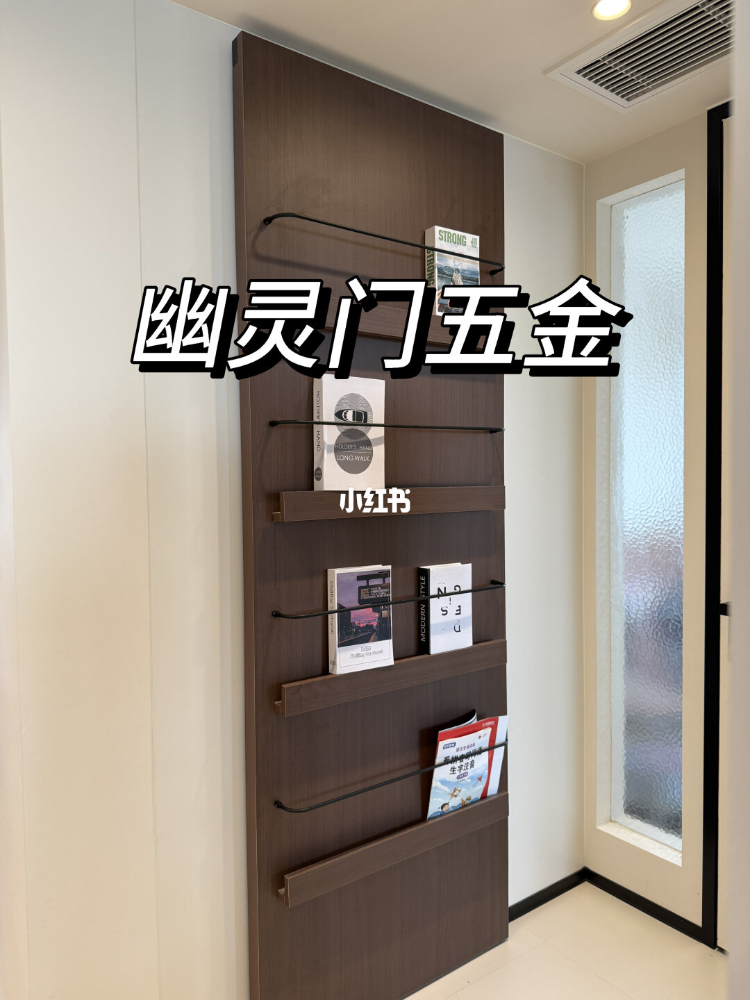
幽灵门
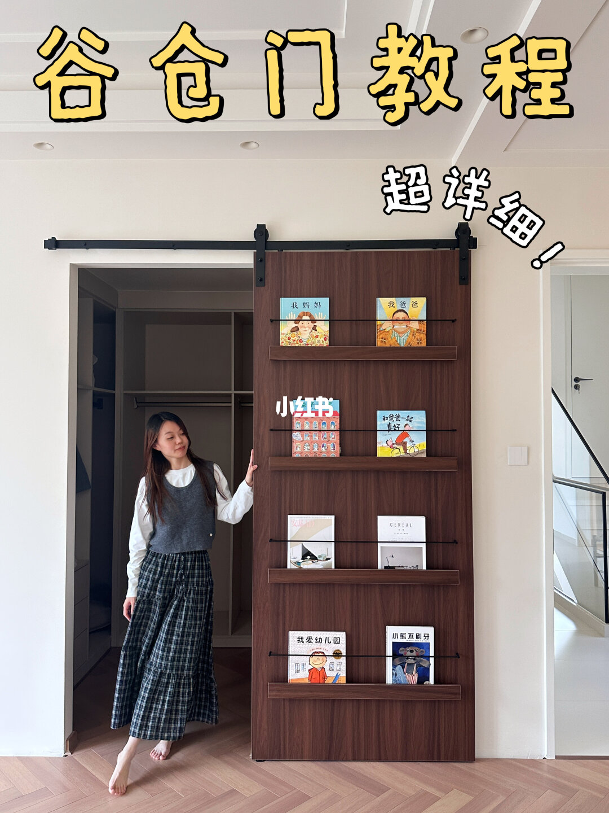
谷仓门
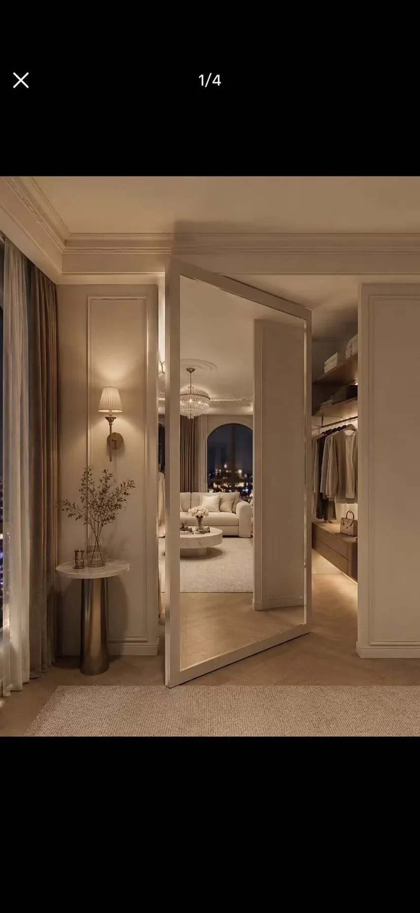
衣帽间旋转门
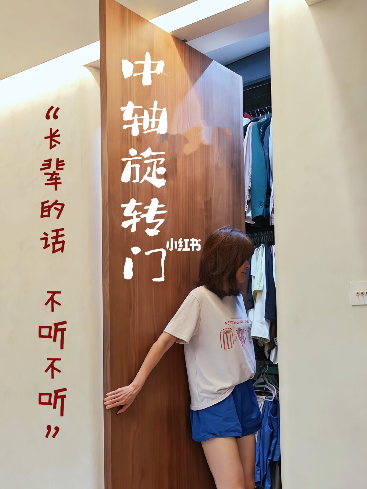
中轴旋转门
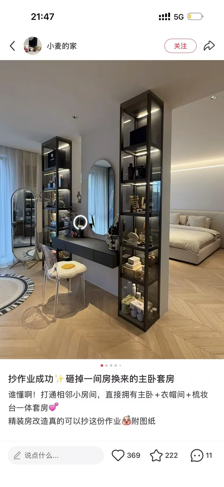
梳妆台+展示柜

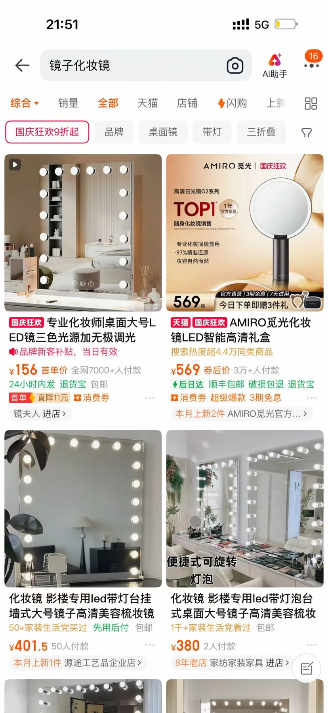
化妆镜

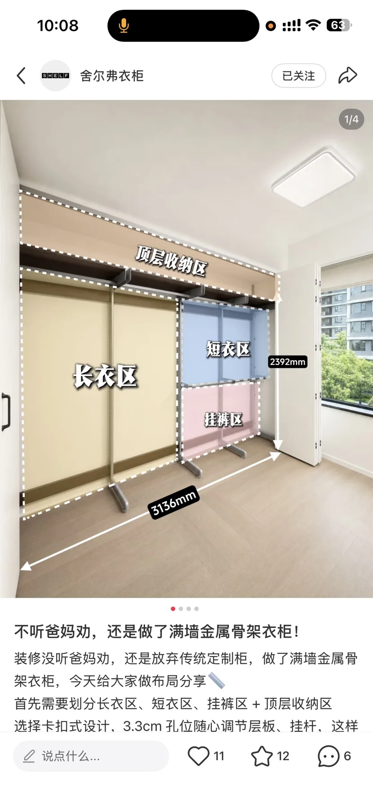
衣柜分区
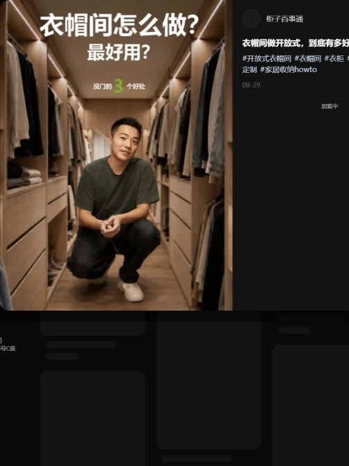
衣帽间做开放式，到底有多好用？（优点：多了移动空间）
用金属立柱（舍尔弗品牌）改出步入式衣帽间
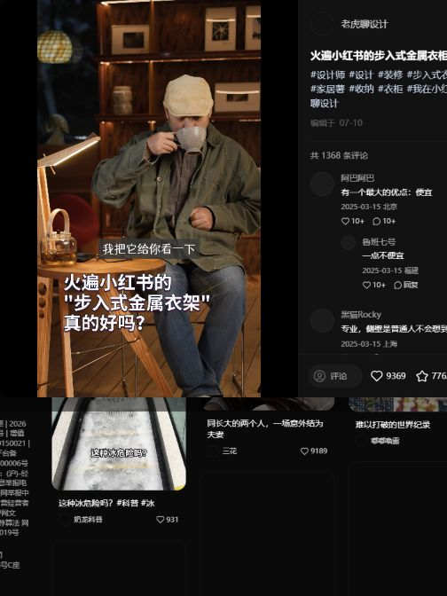